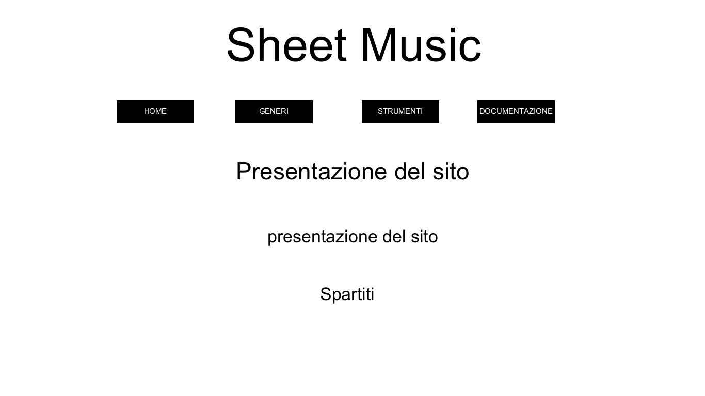

Sheet Music
Sheet MusicIl sito Sheet Music raccoglie spartiti di ogni genere per permettere a persone di tutte le età di intraprendere un percorso alla scoperta della musica, è indicato sia per i più giovani ma anche per chi di anni ne ha un po' di più, non è mai troppo tardi per imparare a suonare! Sheet Music si divide in generi: andiamo dalla musica classica con "Swan Lake" fino alla musica pop con "Watermelon Sugar". Si trova anche una divisione in strumenti, non così scontata sul web: canzoni come "Believer" oppure "Knocking on heaven's door" sono a disposizione del neo-musicista o del talento già assodato!
- Obiettivi: aiutare coloro che vogliono intraprendere un viaggio nel favoloso mondo del suonare uno strumento a trovare la canzone che fa più al loro caso e che sono anni che vorrebbeero imparare!
- Target: il sito ha un range molto ampio dal momento che ha spartiti di diversi livelli di difficoltà e quindi per qualsiasi tipo di esigenza: é adatto sia ai più piccoli che ai più grandi, sia per chi non ha mai preso uno strumento in mano ma anche per chi ha un vero talento.
- Competitors: il sito più simile a cui si può associare Sheet Music è Freescores, il quale offre una vasta scelta di spartiti a pagamento, motivo per il quale molti aspiranti musicisti demordono nella loro scelta ancor prima di inziare. Sheet Music invece è interamente gratuito e si mette a completa disposizione dell'utente cercando inoltre di ottimizzare la ricerca con una grafica minimal ma efficace. Altro sito sulla linea di Sheet Music è Cantorion, il quale però si limita nell'offerta di spartiti di musica classica, genere non così semplice, soprattutto all'inizio.

HOME
GENERI
.png)
Il font utilizzato é Sigmar, un carattere divertente e d'impatto. I colori maggiormente utilizzati sono il nero per le scritte ed una tenue colorazione di lilla che dona alla vista piacevolezza; mentre come background in tutte le pagine del sito si trova uno spartito in carta gialla che, oltre a rimanere in linea con l'argomento generale, dona eleganza al sito.
Background: la realizzazione di questo sito prende spunto da alcuni siti visti su internet che raccolgono spartiti a pagamento. Al contrario di questi ultimi, l'intento di Sheet Music è quello di, oltre ad ordinare gli spartiti in una maniera logica e quindi più semplice, condividerli con gli utenti in maniera gratuita. Il sito permette di poter vedere in maniera integra lo spartito ed inoltre di ascoltare la canzone.
Obiettivi comunicativi: il sito si propone di aiutare colore che vogliono imparare a suonare uno strumento a reperire nella maniera più efficace possibile il materiale più adatto.
Target audience e messaggio: il messaggio si rivolge a una vasta gamma di utenti: dal bambino che ha inizato adesso a suonare al nonno che vuole rispolverare le sue doti per dedicare una serenata alla nonna. É un sito molto semplice da trovare: oltre alla pagina Instagram anche l'utente meno "social" lo troverà facilmente sul web. L'idea è quella che con la visione del sito l'utente scopra la possibilità di avere le capacità per imparare a suonare e che non è un'impresa così impossibile.
Gli obiettivi posti sono:
PROMOZIONE DEL SITO: la promozione del sito verrà fatta tramtite la pagina Instagram "_Sheet_Music2.0" ed inviando il link ai contatti su Whatsapp.